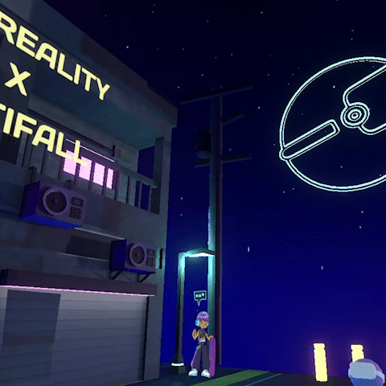
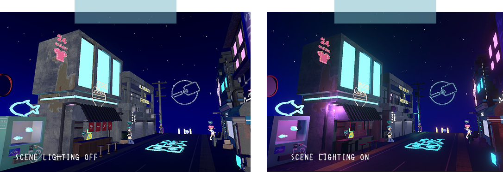
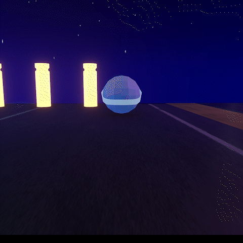
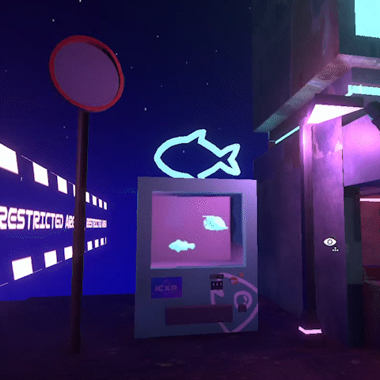
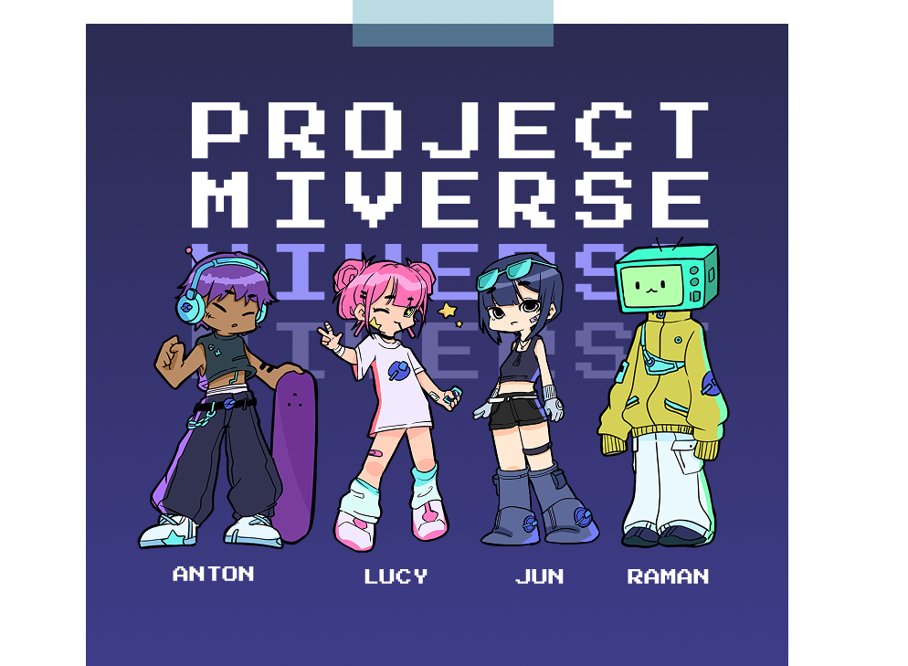
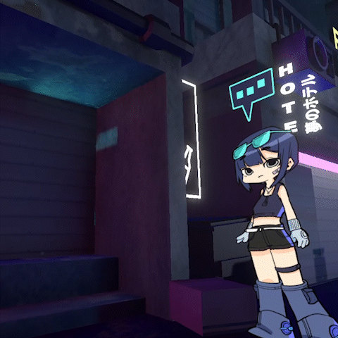
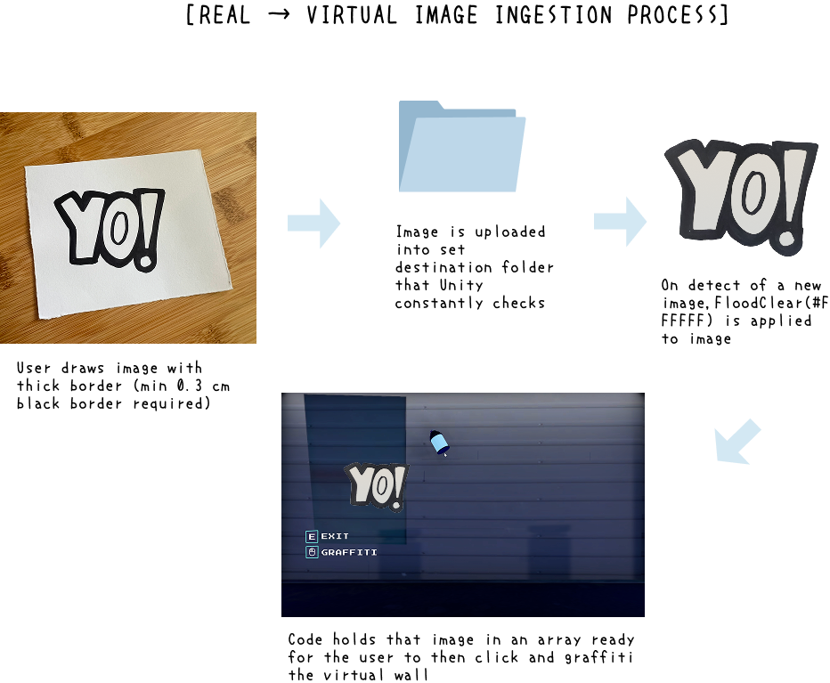

Real-Time Drawing Ingestion into Virtual Environments
Ok haha, sorry, I’m semi-clickbaiting in the fact that I want to talk a bit about the project reasoning and creative effort before going into the actual technical explanation the pipeline of converting physical drawings in real time to virtual assets that can be placed in a digital world. If you’re only curious about how that works, please click here.
Designing a Standout Experience to Maximize Passerby Interaction
For Fall 2023, I was elected as one of the Co-Presidents of the VR Club at the University of Michigan, the Alternate Reality Initiative (ARI)! With this new position came a new challenge, which was that we needed to attract new club members for the new school year.
One of the biggest opportunities for all clubs is Festifall, the University’s largest annual student organization and campus involvement fair held during the first week of the fall semester. For ARI, it was one of our best opportunities to attract new students and introduce them to VR.
If you know me, you know that I love flashy, novel experiences. So when thinking about how ARI could attract attention, my main thought was building some kind of virtual experience to show that our club had technical capability to teach people XR development. And so that thought led Sonia, another member of the ARI leadership team, and me to create this project, MIVERSE. MI + verse, Michigan-verse.
Inspired by aquarium installations where kids can color their own fish and watch them appear in a virtual aquarium on a screen, we decided to build our own version where participants can express their creativity by drawing a grafitti design and "spraying" it on our city walls. We decided on this idea because when we first started brainstorming about XR, we kept coming back to two things: the ability to step outside the rules of the physical world, and the limitless creativity that comes with creating a virtual space. Therefore we wanted to give them the ability to create their own designs and see how it adds to the virtual city. Visually, we leaned into a cyber-sci-fi Tokyo/Hong Kong aesthetic, with neon colors and a city that never really felt like it left 2 AM. Because hand modeling an entire city can be time consuming, we focused on just building one busy street.
As a content consumer, I think it’s easy to overlook environmental design. However, when you're actually the one designing, there's a lot more that I realized needs to be considered to make a fictional place feel lived in. Some of the things we considered for city street were what businesses would exist, how the characters would interact with the stores, and what rules would exist in this city. For example, due to the energy consumption required to power this city, we theorized that the city must have figured out some cheap way to generate energy, allowing for charging to be free. Furthermore to the street, we filled it with living spaces and businesses. Oh, and specifically a WcDonald’s because fast casual food will always exist in a capitalistic society! For finishing touches, we added signs and advertisements, as well as trash and waste scattered throughout the street to make the city feel more lived in and give the impression that people actually live and work there.





Now, with a city, of course we need people that live there. We ended up designing four characters: Jun, Lucy, Ramen, and Anton, a cool friend group that represented the kind of community we hoped new students would find when they joined the VR club.

In these characters, we also put a lot of consideration into their designs, as a lot of the details were XR-related. Jun wears a pair of MR glasses, Ramen has a TV screen on his head for a more VR-inspired design, and Lucy is holding a phone, which represents AR. All four characters have our ARI emblem incorporated throughout their clothing, and to make each character more memorable, we gave them a signature color.
Additionally we decided to use a 2.5D approach for the characters, which gave them a more stylized look while saving us the time of fully modeling each character in 3D. I liked how this approach also felt like another way of combining realities, by bringing 2D illustrations into a 3D world.

Once placed into the city, we gave each character their own topics and perspectives to share. When you talk with them, you get to learn about different aspects of XR through the context of MIVERSE, allowing the technology to be introduced naturally through conversations within the world!
Physical to Virtual Real Time Image Ingestion Pipeline
Now for the actual technical part of this project and the main point of the article!
After building out the world and creating the virtual wall where people would actually graffiti, we needed to figure out how these interactive aquariums even worked. Surprisingly, the process was actually a lot more straightforward than we expected.
At the core, these setups are composed of two things: a drawn template and something that detects and uploads it. For example, an aquarium installation might provide a variety of fish templates for users to color in, along with a system that scans the finished drawings and brings them into the virtual aquarium.
To do this, we used a Unity library called ProtoTurtle’s BitmapDrawing, which extends Unity’s Texture2D class with bitmap drawing operations that aren’t available by default. Unity’s Texture2D by default gives users SetPixel and GetPixel, which wasn’t useful in our case. ProtoTurtle adds operations like DrawLine, DrawCircle, DrawRectangle, and, most importantly for us, FloodFill, which floods a region of pixels with a new color starting from a given point. We ended up using FloodClear, which is a variation of FloodFill, to detect the black Sharpie outline of a drawing and make everything outside of it transparent. Essentially, it calculates the color distance between neighboring pixels and, if they are close enough to the original color, which we passed in as #FFFFFF, clears them.
Some experimentation was definitely required. When we took pictures of the drawings, we had to try to get the white paper background evenly colored and as close to white as possible, even though there was some tolerance. We also found that the Sharpie border had to be at least 0.3 cm thick to provide clean detection.
Once the image was taken, we would upload it to a watched folder on the computer our MIVERSE program was running on. When the code detected a new image in the folder, it would process the image and spawn it as a plane object on the graffiti wall in Unity, applying the cleaned-up texture with a transparent shader. And this whole thing ran quickly enough so that drawings appeared in pretty much real time.

And so, with everything ready to go, it was time for Festifall...
Festifall and What I Overlooked
When Festifall finally came around, I was really excited to show everything off. Our booth was set up with our banner, required candy, and MIVERSE was running at maximum brightness with the paper and markers we prepared on the side.
However, I completely overlooked one thing: no one had time to stop and draw.
Students were constantly moving between booths, and usually, people only had enough time for a quick introduction to the club and a short interaction with moving the ARI characters in the MIVERSE world. The entire interactive drawing and scanning component we had spent time on never actually got used, which was a little unfortunate.
Still! I think it was really fun to try out and work on something that I thought was cool and had never understood before. Thankfully, MIVERSE still had a longer life due to it becoming our main club branding. We ended up using it as the foundation of our beginner Unity and Blender workshops I ran for new club members, as it gave us a cool world to teach content in!
And I do think it really did give us a much stronger start in terms of club membership that year. I don’t have the exact signup statistics, but our first meeting room was packed.
But I think the main takeaway from this project is about designing experiences. A feature can work exactly as intended but still fail if it doesn’t fit the context in which people are using it. You have to consider the entire experience, not just whether the feature itself works :>